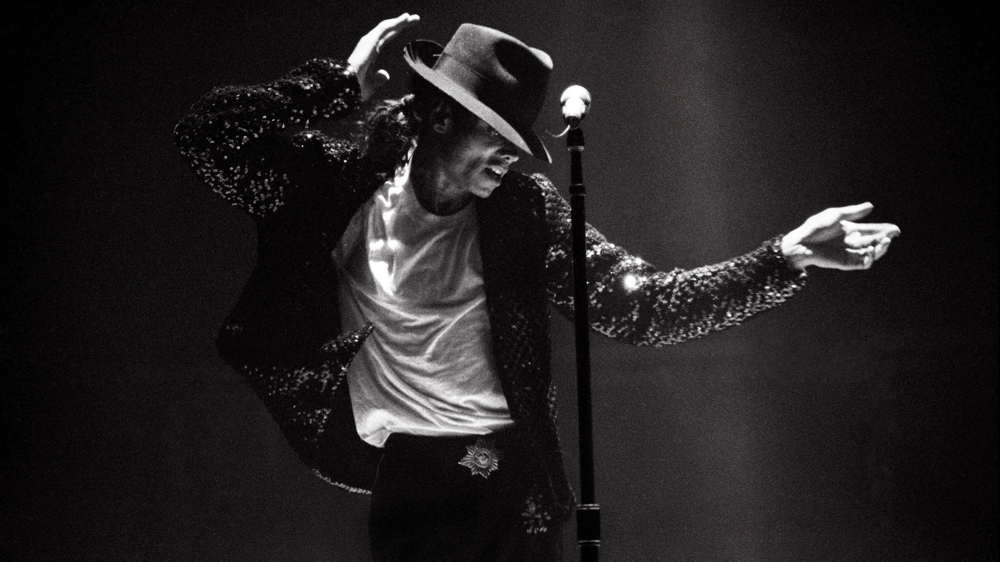
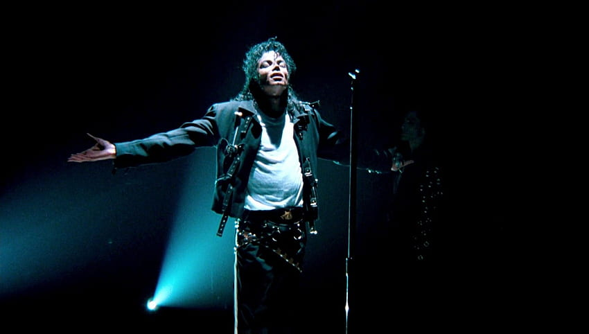

Michael Joseph Jackson was an American singer, songwriter, dancer, and one of the most influential and iconic pop music entertainers of all time. He was nicknamed the “King of Pop” by his close and long-time friend Elizabeth Taylor, a title that stuck after striking a chord with fans.
Born on August 29, 1958 in Gary, Indiana, Michael Jackson was the eighth of ten children (one died shortly after birth) to Joseph (Joe) and Katherine Jackson. His father worked as a crane operator in a steel mill and his mother at a Sears department store. Music was a source of escape from their daily life and both parents were musical themselves. Joe played guitar in a local R&B group, which rehearsed in the family’s tiny house at 2300 Jackson Street (coincidentally named after the U.S. president). His mother sang and played clarinet and piano. Joe’s band rehearsals, combined with their lively stream of music in the home, had a big impact on the Jackson children from an early age.
All eight of Michael Jackson’s siblings — Rebbie, Jackie, Tito, Jermaine, La Toya, Marlon, Randy and Janet — made marks in the music industry. However, Michael’s talent was evident from a very young age and with his father’s encouragement, Michael started his career at the age of five. He joined his brothers’ musical group in the 1960s, which became The Jackson 5.
Once Michael joined as lead singer and performer of The Jackson 5, they were on the fast track to fame and fortune. Michael’s voice, combined with his signature dance moves, entertained and thrilled audiences. His earliest musical influence was James Brown, known for his mesmerizing dance moves on stage. Brown personally taught Jackson how to drop the microphone and then catch it before it hit the stage. Michael also adopted the dance moves and dramatic postures of Sammy Davis Jr. and Jackie Wilson. Jackson admired the choreographic innovations of Gene Kelly and how Smokey Robinson wrote and produced his own material.
The success of The Jackson 5, later renamed The Jacksons, drove Michael to be an illustrious artist. He started his solo artist career in 1971, but it wasn’t until 1979 when he teamed up with Quincy Jones to record his solo album “Off the Wall” that he earned entry into the level of influential R&B singer/songwriters. Now, “Off the Wall” is one of the greatest albums of all time and was inducted into the Grammy Hall of Fame in 2008. Its release was the first time an album by a solo artist had ever struck four hits in the top 10 Billboard Hot 100 charts. The single “Don’t Stop ‘Til You Get Enough” landed Michael his first Grammy Award for best male R&B vocal performance. The black-and-white style featured on the cover of “Off the Wall” helped brand his image that would lead to global fame. Michael used this same style for his breakthrough music videos, including “Don’t Stop ‘Til You Get Enough” and “Billie Jean,” and would later tap the iconic style for the entirety of his solo career.
Reunited with Quincy Jones for his follow-up 1982 album, “Thriller,” Michael wanted to create the biggest selling pop album ever. Ever since he was young, he studied composition and was inspired to create “Thriller” like Tchaikovsky’s Nutcracker suite, where every song was a massive hit. He fulfilled his dream as “Thriller” launched him into superstardom. He won eight Grammy Awards for “Thriller,” including Album of the Year and Record of the Year. Michael Jackson’s “Thriller” is the all-time best-selling album worldwide and was also inducted into the Grammy Hall of Fame.
Michael Jackson is equally known for his innovative dance moves. One of Jackson's most iconic dance moves was performed on March 25, 1983 for Motown 25 where he first unveiled the "moonwalk" during the performance of “Billie Jean.” He learned it from Jeffrey Daniel who pioneered the dance move known previously as the backslide. It would be five years later, during the making of the music video “Smooth Criminal,” where a dance routine that paid homage to Fred Astaire in the 1953 film, The Band Wagon, highlighted his inventive spirit.
For his live performances, Jackson wanted to create an anti-gravity illusion of leaning from the ankle at a 45-degree angle while keeping his body straight. Audiences were wowed by the “anti-gravity lean” dance move that is physically impossible, but made possible through his shoes. The shoes were designed with ankle supports and cutouts in the heels, that were temporarily attached to pegs rising from the stage at the appropriate moment. The effect was a seemingly impossible forward lean. The shoes were patented by Michael Jackson and his co-inventors on October 26, 1993.